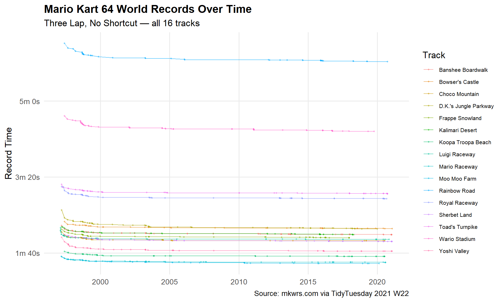
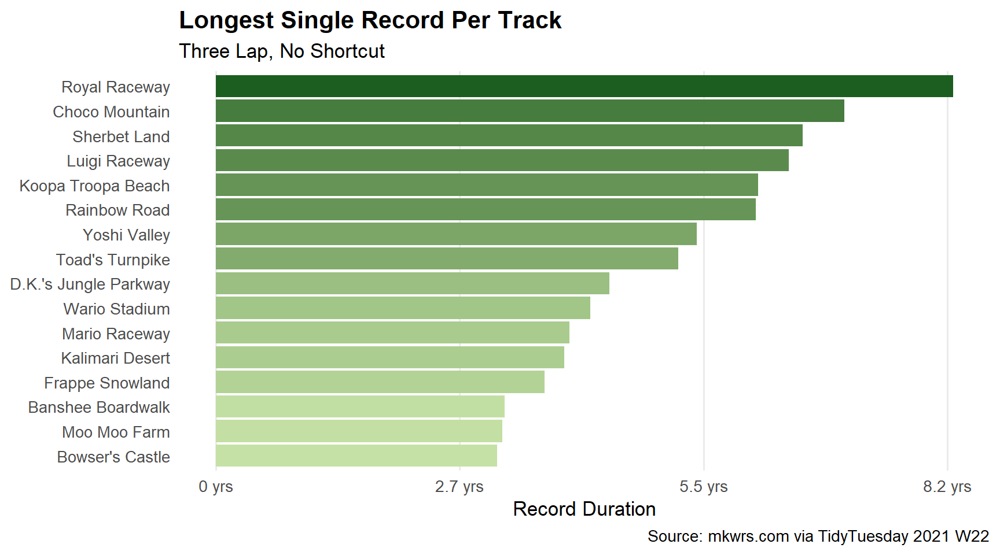
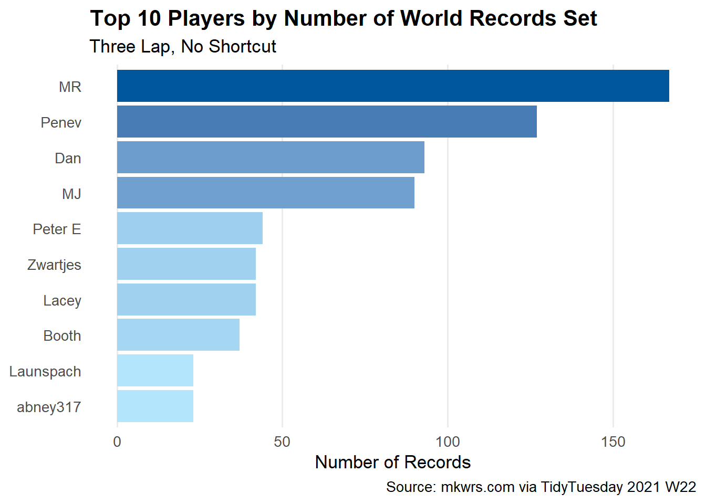

Exploring 25 years of world records in Mario Kart 64 using dplyr and ggplot2
Published
July 8, 2026
The Dataset
This week’s dataset comes from TidyTuesday Week 22 (2021), sourced from mkwrs.com — a community-maintained record of every world record ever set in Mario Kart 64.
The dataset tracks every time someone set a new world record, going all the way back to 1997. It includes the track, whether a shortcut was used, the player’s name, the system they played on (NTSC or PAL), the date, and how long the record stood before someone beat it.
Before plotting anything, it helps to understand what we’re working with.
# How many records per track?records %>%count(track, sort =TRUE)
# A tibble: 16 × 2
track n
<chr> <int>
1 Wario Stadium 201
2 Toad's Turnpike 196
3 D.K.'s Jungle Parkway 180
4 Frappe Snowland 180
5 Rainbow Road 179
6 Kalimari Desert 169
7 Mario Raceway 160
8 Yoshi Valley 160
9 Royal Raceway 149
10 Choco Mountain 148
11 Luigi Raceway 147
12 Sherbet Land 143
13 Koopa Troopa Beach 89
14 Banshee Boardwalk 83
15 Moo Moo Farm 81
16 Bowser's Castle 69
# What types of records exist?records %>%count(type, shortcut)
# A tibble: 4 × 3
type shortcut n
<chr> <chr> <int>
1 Single Lap No 625
2 Single Lap Yes 498
3 Three Lap No 822
4 Three Lap Yes 389
The dataset has four combinations — Three Lap and Single Lap, each with and without shortcuts. For this analysis, we’ll focus on Three Lap, no shortcut records, which represent the “standard” way to play each track.
How Much Have Records Improved Over Time?
The first question that came to mind: how much faster have players gotten since 1997?
records %>%filter(type =="Three Lap", shortcut =="No") %>%mutate(date =as.Date(date)) %>%ggplot(aes(x = date, y = time, colour = track)) +geom_line(alpha =0.6) +geom_point(size =0.8, alpha =0.4) +scale_y_continuous(labels =function(x) paste0(floor(x /60), "m ", round(x %%60), "s")) +scale_x_date(date_breaks ="5 years", date_labels ="%Y") +labs(title ="Mario Kart 64 World Records Over Time",subtitle ="Three Lap, No Shortcut — all 16 tracks",x =NULL,y ="Record Time",colour ="Track",caption ="Source: mkwrs.com via TidyTuesday 2021 W22" ) +theme_minimal(base_size =13) +theme(legend.position ="right",legend.text =element_text(size =8),plot.title =element_text(face ="bold"),panel.grid.minor =element_blank() )

Every track has gotten faster over time, but the rate of improvement varies a lot — some tracks saw big drops early on and have been relatively stable since, while others have been chipped away at slowly for decades.
Which Records Have Stood the Longest?
The record_duration column tells us how many days a record held before being beaten. Long-standing records are worth looking at — they suggest a track where improvement is hard to find.
records %>%filter(type =="Three Lap", shortcut =="No") %>%group_by(track) %>%summarise(longest_record =max(record_duration, na.rm =TRUE)) %>%arrange(desc(longest_record)) %>%mutate(track =fct_reorder(track, longest_record)) %>%ggplot(aes(x = longest_record, y = track, fill = longest_record)) +geom_col(show.legend =FALSE) +scale_fill_gradient(low ="#C5E1A5", high ="#1B5E20") +scale_x_continuous(labels =function(x) paste0(round(x /365, 1), " yrs")) +labs(title ="Longest Single Record Per Track",subtitle ="Three Lap, No Shortcut",x ="Record Duration",y =NULL,caption ="Source: mkwrs.com via TidyTuesday 2021 W22" ) +theme_minimal(base_size =13) +theme(plot.title =element_text(face ="bold"),panel.grid.minor =element_blank(),panel.grid.major.y =element_blank() )

Some records have stood for several years before being beaten. This tells you something interesting — these aren’t just games people play casually. Breaking these records required serious, sustained effort from a dedicated community.
Who Has Set the Most Records?
records %>%filter(type =="Three Lap", shortcut =="No") %>%count(player, sort =TRUE) %>%head(10) %>%mutate(player =fct_reorder(player, n)) %>%ggplot(aes(x = n, y = player, fill = n)) +geom_col(show.legend =FALSE) +scale_fill_gradient(low ="#B3E5FC", high ="#01579B") +labs(title ="Top 10 Players by Number of World Records Set",subtitle ="Three Lap, No Shortcut",x ="Number of Records",y =NULL,caption ="Source: mkwrs.com via TidyTuesday 2021 W22" ) +theme_minimal(base_size =13) +theme(plot.title =element_text(face ="bold"),panel.grid.minor =element_blank(),panel.grid.major.y =element_blank() )

A handful of players dominate the record books. Setting a world record once is hard. Setting dozens is extraordinary.
What I Learned from This Dataset
A few things stood out that I didn’t expect going in:
Records keep improving. Even on tracks that have been played for 25+ years, the record times keep getting pushed lower. The gap between a 1997 record and a 2020 record is often measured in seconds — which sounds small until you realise that’s a huge percentage improvement on a track that takes under two minutes.
The community is remarkably small. Looking at the player names, the same few names appear across decades. This is a tiny, deeply dedicated community of people who have collectively spent thousands of hours pursuing milliseconds.
NTSC vs PAL matters. The system you play on affects timing in ways that aren’t obvious from the data alone — PAL systems run at a different frame rate, which influences what times are even achievable.
Your Turn
A few questions worth exploring if you want to take this further:
How does the improvement rate differ between shortcut and non-shortcut records?
Which tracks have seen the most competitive back-and-forth between players?
Is there a relationship between track length and how long records tend to stand?
Stay curious. Stay connected. Ride the tide together.